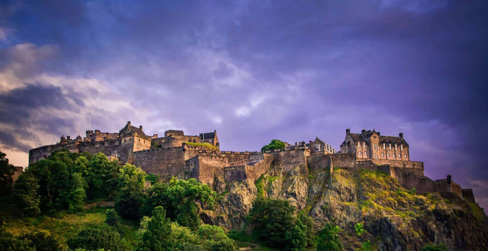

About Edinburgh Castle
Edinburgh Castle is one of the most famous landmarks in Scotland. It sits on top of Castle Rock, a volcanic rock formation in the city of Edinburgh. The castle has played an important role in Scottish history for many centuries and has served as a royal residence, military stronghold, and national symbol. Today, it is one of the most visited tourist attractions in Scotland and houses the Scottish Crown Jewels and the Stone of Destiny.
Quick Facts
- Location: Edinburgh, Scotland
- Coordinates: 55.9486, -3.1999
- Built: 12th century (with earlier fortifications)
- Type: Historic fortress and castle
- Elevation: Built on Castle Rock (volcanic rock)
- Open to the public?: Yes, daily tours available
Note when going here
Edinburgh Castle offers amazing views of the city from its high position on Castle Rock. Visitors can explore historic buildings inside the castle grounds, including St. Margaret’s Chapel and the Crown Room. Arriving early is recommended since the castle is one of the most popular attractions in Edinburgh.
Visitor Comments
No comments yet. Be the first!